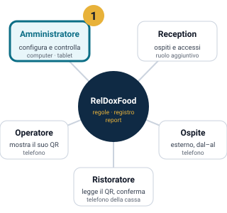
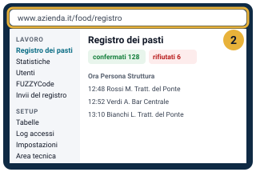
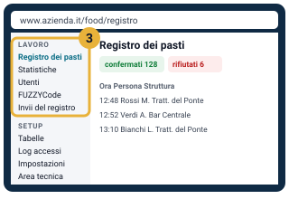
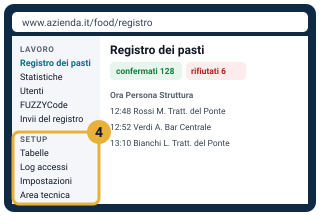
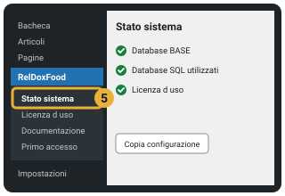

Il mio catalogo › RelDoxFood › Percorso 1 · Configurare
La mappa dell applicazione

Iris: Sei qui: tappa 1. Ci vogliono 6 minuti. Dopo questa, sai sempre dove cercare.
1In 30 secondi
Sapraichi fa che cosa e dove trovi ogni cosa
Ci vogliono6 minuti
Ti serveil computer, l indirizzo di RelDoxFood e la tua password
2Passo per passo
Passo 1
Trova il tuo ruolo nella mappa.
Vedi: Cinque ruoli intorno a RelDoxFood. Tu sei l Amministratore (chi configura e controlla): lavori dal computer o dal tablet.

Passo 2
Apri RelDoxFood dal computer, all indirizzo della tua azienda.
Vedi: L indirizzo finisce con /food/, per esempio www.azienda.it/food/. Dopo l accesso si apre il «Registro dei pasti»; a sinistra, la colonna del menu.

Passo 3
Guarda il gruppo «LAVORO» in alto a sinistra.
Vedi: «Registro dei pasti», «Statistiche», «Utenti», «FUZZYCode» (i codici cumulativi per un referente e i suoi ospiti), «Invii del registro» (i report automatici). È il lavoro di ogni giorno.

Passo 4
Guarda il gruppo «SETUP» più in basso.
Vedi: «Tabelle» (i testi delle notifiche), «Log accessi», «Impostazioni», «Area tecnica». È la configurazione: ci torni di rado.

Passo 5
In WordPress, apri «RelDoxFood» › «Stato sistema».
Vedi: I controlli del sistema, tutti verdi. Nello stesso menu c è «Licenza d uso». Tutto il resto si fa dentro l applicazione.

3Da sapere
SuggerimentoSalva l indirizzo /food/ fra i preferiti del browser: ci entri con un clic, senza passare da WordPress.
RicordaSe mangi anche tu, hai un solo account: la tua scheda con il ruolo Admin. Dal computer vedi l amministrazione, dal telefono il tuo QR.
AttenzioneLe «Statistiche» le vede solo l amministratore. Per registrare gli ospiti e consegnare gli accessi c è il ruolo Reception: non serve dare il ruolo Admin a chi fa solo questo.
Se non funzionaUn controllo di «Stato sistema» non è verde → non andare avanti con la tappa 2. Tocca «Copia configurazione» nella stessa pagina e segui la scala dell aiuto qui sotto.
4Prova tu
Apri RelDoxFood dal computer. Senza cambiare nulla, tocca una voce del gruppo «LAVORO» e una del gruppo «SETUP», poi torna al «Registro dei pasti».
Ce l hai fatta se sai dire, senza guardare, in quale gruppo stanno «Invii del registro» e «Impostazioni».
Ce l hai fatta se sai dire, senza guardare, in quale gruppo stanno «Invii del registro» e «Impostazioni».
5Hai capito?
In una rigaLavoro per ogni giorno, Setup per la configurazione, WordPress solo per lo stato e la licenza.
7Se ancora non va
- 1Rileggi il passo in cui ti sei fermato e guarda la figura.
- 2Apri «Se non funziona» qui sopra e le domande frequenti di RelDoxFood.
- 3Chiedi a chi, nella tua azienda, segue il sito WordPress.
- 4Solo se ancora non va: l assistenza, con il testo di «Copia configurazione». (recapito a cura del Marketing)
Iris: Fatto! Prossima tappa: La prima configurazione.
Le figure sono disegni (SVG) costruiti sul manuale Amministratore 1.24.11L e sulle scritte del prodotto alla stessa versione; dati inventati. Quando RelDoxFood confermerà immagini da dati inventati potranno diventare schermate dell ambiente di prova, sempre con i numeri sopra.